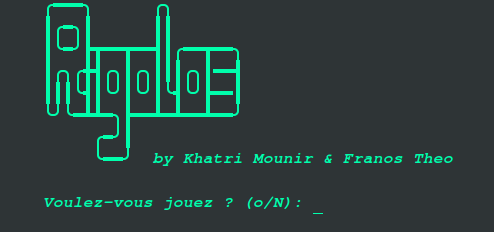
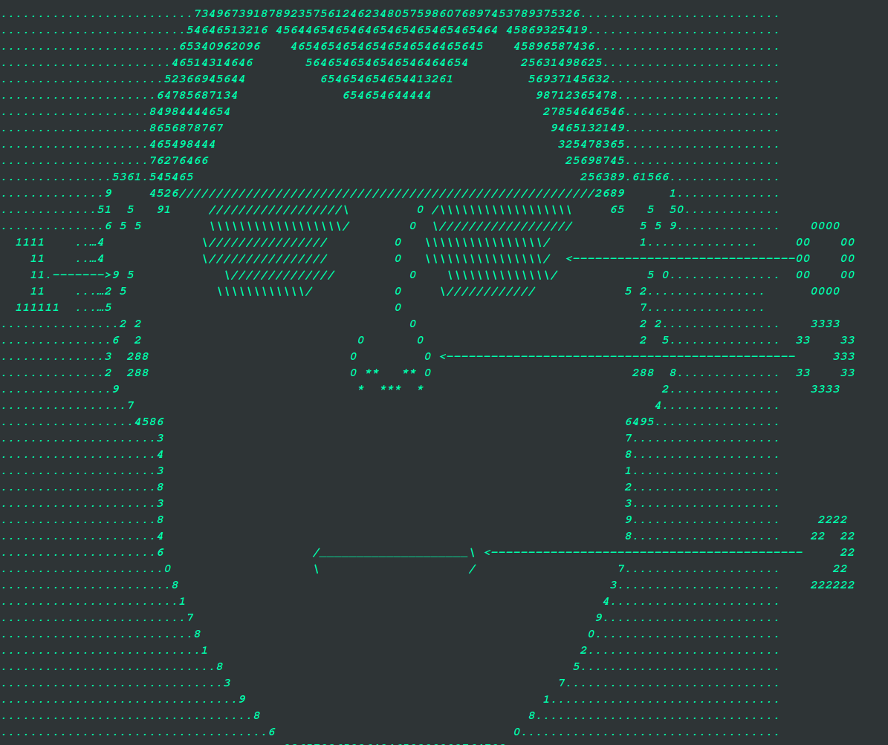
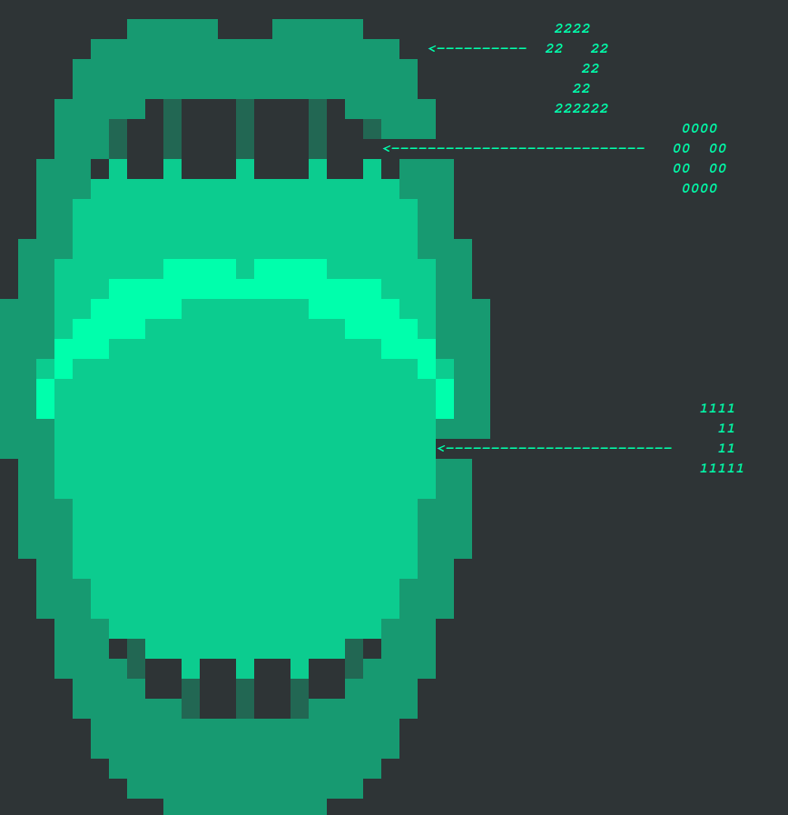

HOME
DESCRIPTION
COMPETENCES DU PROJET
COMPETENCES ACQUERIE
SCREENSHOT
TF

DESCRIPTION
Rigolos est un projet réalisé à 2.
Il à était effectué en première année de BUT, le but étant de coder un jeu ludo-pedagogique sur Terminal en Java.
Dans ce jeu vous parcourez les différente parties d'un squelette représentant le corps humain et vous devez trouver les parties du corps associé aux numéros,
exemple :
 